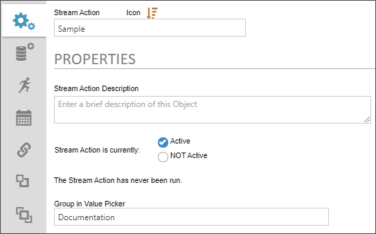
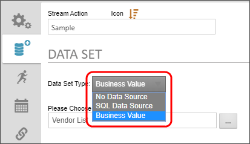
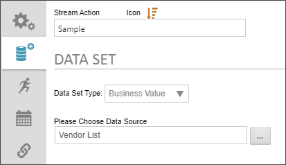
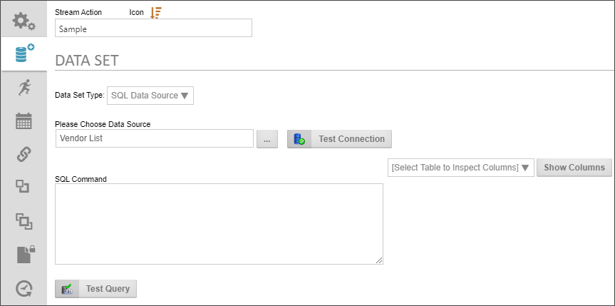
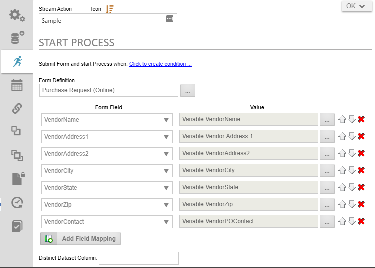
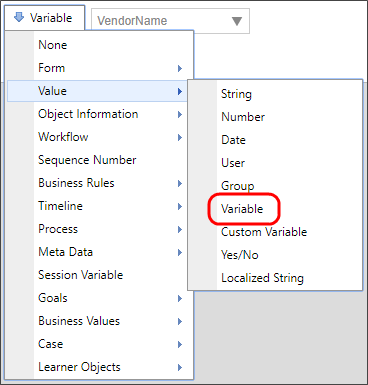
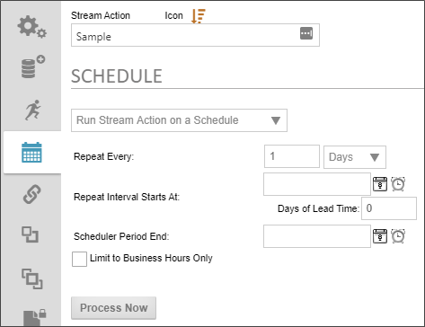

Users of Process Director v5.26 and higher have access to the Stream Actions object. This object will read a recordset stream from a Datasource, and enable you to submit a form instance for each record in the stream. Stream Actions can be scheduled and run on a recurring basis to import data on any desired schedule.
While Process Director enables Knowledge Views to run a new process instance for each row in the Knowledge View's results, this feature has a limitation. It can only be implemented when the data is reportable by a Knowledge View. Data from outside of Process Director cannot be returned via a Knowledge View, which limits the data that can be accessed and used to prompt a process instance.
The Stream Action, on the other hand, can access any data from any accessible Datasource and return that data as a recordset stream. Data from each record in the stream can be extracted, placed into a new form instance, and automatically submitted. In general, the Stream Action is used to process external data, while the Knowledge View is used to access internal Process Director data.
The Knowledge View begins a Timeline instance for each record. The Process Timeline may or may not have a Form associated with it and may or may not use any of the Knowledge View's data. Conversely, the Stream Action directly maps the data from each record to a new form instance, which is then automatically submitted. If you want a process to run, you must specify the process in the Form definition's Automatically start this process after Form is submitted property. The Stream Action is specifically designed to transfer data from a recordset into a series of Form instances by mapping data from the stream into Form fields.
A common use case for the Stream Actions Object would be to import data from an Excel spreadsheet, external data source, or Business Value, then create a new form instance for each row in the recordset, fill out fields on the form instance, then submit it to begin a process for each record.
The Stream Action requires a Form to operate, along with a Datasource object that enables you to retrieve the data you want. Without a Datasource object, you won't be able to access your data. Without a Form, you won't be able to map your data to any Form fields. Additionally, while a Stream Action can use a manually written SQL statement to retrieve the data from a data source, a Business Value is commonly used to return the data. These objects must all exist before you can configure the Stream Action, so it's best to create them prior to creating the Stream Action.
The Properties tab provides the basic object configuration settings.

The following Properties are configurable.
The name of the Stream Actions object.
The description that you'd like to display in the second line of the object's entry in the Content List.
For Stream Actions that you wish to schedule, you can activate or deactivate the Stream Actions object from running by selecting the appropriate radio button. This property has two options, Active and NOT Active, with NOT Active being the default setting. A Stream Action that is set to NOT Active won't invoke the scheduler and can only be run manually.
If the Stream Action will be run on a scheduled basis, this property must be set to Active for the scheduler to run the Stream Action. Additionally, if the Schedule tab is not configured with a valid schedule, setting this property to Active will have no effect. In order to run a Stream Action on a scheduled basis, this property must be set to Active, and a valid schedule for running the Stream Action must be configured via the Schedule tab.
Irrespective of how this property is configured, a stream action can always be run manually, at any time.
Enables you to set the category in which this Stream Actions Object will appear in the dropdown selector of the Choose System Variables dialog box.
Below the Stream action is currently... property you'll see a message that says: "The Stream Action has never been run." This message will display until the Stream Action has run, after which it will be replaced with the date and time of the Stream Action's last iteration.
The Data Set tab enables you to configure the data source you wish to use for this Stream Actions object. The configuration properties available on this tab will depend on the Data Set Type you select to use. You can select either a Business Value as a data source, which is the most common user case, but you can also configure a SQL data source directly as well.


When you set the Data Set Type to Business Value, you can use the Please Choose Data Source Object Picker to browse for the Business Value object you wish to use as the data source.

When you set the Data Set Type to SQL Data Source, the following properties are configurable.
Please Choose Data Source: An Object Picker that enables you to choose the Datasource object that connects to the database.
Test Connection: Once the Datasource object has been selected, you can click this button to test the connection to the specified database.
SQL Command: Enables you to type in the SQL Statement that is required to return the desired data.
Select Table.../Show Columns: Enables you to select a table in the Datasource to which you've connected, then show the columns contained in the selected table. This will assist you in writing your SQL statement, in case you don't which columns you want to include.
Test Query: Once you've written the SQL Statement, you can test its operation by clicking this button.
The Start Process tab enables you to specify the form to use to import the data and start a process when the form is submitted by the Stream Actions Object. When the object runs, it will import the data, create a new form for each row of data in the dataset, then immediately submit the form you specify here. If the Form Definition is configured to start a process when a new form instance is submitted, the process will begin immediately, with the data you've imported via the Stream Actions object.

The following properties are configurable.
This property enables you to create a condition set to use to determine whether the stream action should run when prompted. When the Stream Action is prompted, either manually or by the scheduler, any conditions set here will be evaluated. If the conditions are met, the Stream action will run. If not, the Stream Action will be skipped until the next evaluation.
This Object Picker enables you to select the form definition to use when creating a form instance for each record in the dataset stream.
A dropdown containing all of the available form fields on the specified form. Select the field you want for each field in the stream's record.
A System Variable Picker that enables you to choose the record field to import into the form field. In the Picker, you can select the Variable type to display a dropdown list containing all of the fields in the stream record. The dropdown list will populate automatically with the fields in the stream record.

An Add Field Mapping button enables you to add as many Form Field/Value rows as necessary. Additionally, Up (), Down(), and Delete () buttons on each row enable you to order or delete rows.
This property enables you to type in the name of a column to display only distinct rows. In any data table, some columns may have many duplicates of a value, and you might wish only to display one record where the value of this column is the same. Typing the column name here is just like using the SELECT DISTINCT command in SQL. After the value is encountered once, all successive rows containing the same value will be ignored.
This property is very useful for recordsets that may have repeating row data, for which you do not wish to include duplicate records. In most cases, setting this property is unnecessary, since your data source, whether it's a Business Value or manually-written SQL statement, will use the SELECT DISTINCT command, removing the repeated rows from the original source data prior to evaluation by the Stream Action.
The Schedule table enables you to create the schedule you'd like to use to import the Stream data on a periodic basis.

The following properties are configurable.
This dropdown enables you to turn scheduling on or off for the Stream Actions object.
This text/box. dropdown combination enables you to specify the number of time intervals, and the type of time interval (i.e., hours, days, months, etc.) between each run of the Stream Actions object. The default is to run every 1 day.
This DateTime Picker enables you to specify a start date for the Stream Actions Object to begin the a scheduled import frequency.
This text box enables you to specify the number of days lead time you need to complete the process. For instance, let's say the processes that are started by the Stream Actions Object take 5 days to complete, and all need to be completed by the 15th of every month. You might set the Repeat Every property to run every month, and set the Repeat Interval Starts At property to the 15th of the coming month. If you set the lead time to 5 days, the data will be imported and the processes started five days prior to the 15th.
This DateTime Picker enables you to set an end date to stop running the Stream Actions Object's scheduled runs.
Checking the property will ensure that the Stream Actions object runs only during the business hours you've set in the system.
Clicking this button will run the Stream Actions object immediately.